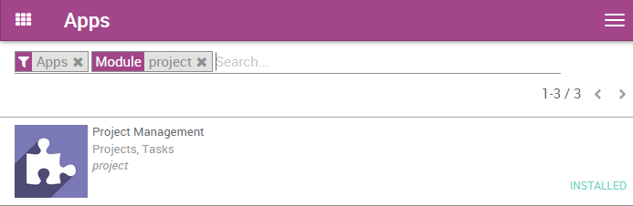
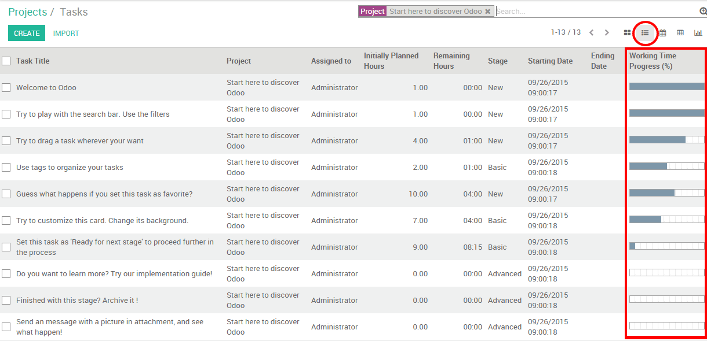

Контроль и распределение людских ресурсов нелегкая задача, особенно если вы управляете большим количеством сотрудников.Управление проектами Odoo, поможет свести ваши усилия к минимуму.
Настройка
Единственное, что нужно сделать - установить модуль Управление проектами (Project Management). Для этого зайдите в модуль Приложения (Apps), найдите Project Management и установите его.
Если вы хотите учитывать временные затраты, нужно будет включить эту опцию. В приложении Project перейдите в в раскрывающемся меню. Затем в разделе Time Work Estimation выберите опцию manage time estimation on tasks. Не забудьте применить изменения.

В индикатор выполнения в виде формы ваших задач. Каждый раз, когда ваш продавец добавит рабочее время в свой расписание, панель будет обновляться соответствующим образом на основе первоначально запланированных часов.

Управление задачами с помощью разных режимов отображения
Вы можете делать обзор своих задач, благодаря нескольким режимам отображения, доступным с помощью Odoo. Три основных вида помогут вам планировать и следить за задачами ваших сотрудников: канбан-доска, режим списка (с отображением временных затрат) и режим календаря.
Создавайте и редактируйте задания, для полноценного использования своих людских ресурсов. Не забудьте заполнить ответственного человека и приблизительное время, если вы его знаете.
Обзор проекта на канбан-доске
На Канбан-доске задачи отображаются в виде карточек, разнесенные по разным столбцам, которые представляют этапы. Это позволяет вам иметь четкое представление о том, на каком этапе находится каждая задача. Вверху столбца размещены задачи с большим приоритетом.
Канбан-доска - это представление по умолчанию при просмотре проекта, но если вы выбрали другое представление, вы можете вернуться к нему в любой момент, щелкнув логотип канбан-доски в правом верхнем углу

Добавление/сортировка этапов
Вы можете легко настроить свой проект в соответствии с потребностями вашего бизнеса, создавая новые столбцы. На канбен-доску вашего проекта вы можете добавить этапы, нажав на Добавить (см. Изображение ниже). Если вы хотите изменить порядок своих этапов, вы можете легко сделать это, перетащив столбец в нужное место. Этапы можно складывать и разворачивать в меню настройки этапа (значок шестеренки ).

Совет
Каждый столбец - это один этап вашего рабочего процесса. Например, в проекте разработки, этапы могут быть такими: Спецификация, Разработка, Тестирование, Завершен.
Сортировка задач по приоритету
На каждом из ваших столбцов вы можете сортировать свои задачи по приоритету. Задачи с более высоким приоритетом автоматически будут перемещены в верхнюю часть столбца. На канбан-доске нажмите на звезду в левом нижнем углу задачи, чтобы назначить ей более высокий приоритет. Не помеченные задачи Odoo автоматически присваивает приоритет в соответствии со сроками завершения.
Обратите внимание, что просроченные задачи, будут отображаться красным цветом (и на канбан-доске, и в виде списка), это сделано для упрощения контроля.

Совет
Вы можете фильтровать свои задачи с помощью соответствующего меню.
Отслеживание хода выполнения каждой задачи в режиме списка
Если вы включили Управление временными затратами по задачам, ваши сотрудники смогут записывать продолжительность своей работы наз задачей в подменю Timesheets (Табели). Полоса прогресса Прогресс рабочего времени* будет обновляться каждый раз, когда сотрудник скорректирует затраченное время.

В режиме списка руководитель может просмотреть время, затрачиваемое на выполнение задач всех сотрудников. Для этого нужно войти в проект и нажать на значок «Список» (см. Ниже). В последнем столбце будет показан прогресс каждой задачи.
Следите за соблюдением сроков в режиме Календаря
Задачи, к которым добавлен конечный срок выполнения,появляются в режиме календаря. Руководителю данный режим позволяет следить за всеми соблюдением сроков в одном окне.

Все задачи отмечены цветом, соответствующие назначенному им сотруднику. Вы можете отобразить задачи для конкретного сотрудника, пометив соответствующие поля справа от календаря.
Совет
Вы можете легко изменить крайний срок в режиме «Календарь», перетащив задачу в другое место.